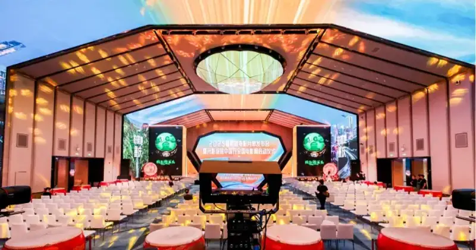
The 2025 summer film slate launch and the kickoff of the Light and Shadow Bloom China Tour national film week
On June 6, 2025, the 2025 summer film slate launch was held in Beijing. It was hosted by the National Film Administration and organized by the Movie Channel and the News and New Media Center of China Media Group. This year's event unveiled a summer lineup of more than 60 Chinese and foreign films. Several major Chinese works appeared together and drew wide attention, such as She's Got No Name, the A Cool Fish series, and The East Pole Island and The Lychee Road. At the same time, the launch used a live broadcast with cinema cameras to explore more possibilities for film and TV content in how it spreads and how it looks.
The whole broadcast was supported end to end by the Good Live PRO, Canon's cine-camera studio live broadcast solution. Built on the core idea of high image quality plus high coordination, it joined cinema systems with broadcast workflows, from multi-camera setup to remote control and parameter management. The Movie Channel's direction and camera team said in an interview that this solution not only raised the image quality of the broadcast. It also gives the channel a new direction to explore the aesthetics of live broadcasting.
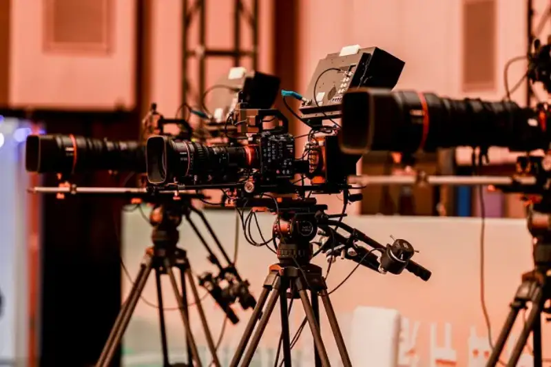
The Good Live PRO cine-camera studio live broadcast solution at the launch
Systematic Build: From Equipment Setup to Workflow Control
To meet the high standards for image quality and multi-camera coordination at this event, the site used six camera positions. They covered wide angle, long telephoto, jib, and reverse angles. Each position used a Canon EOS C400 digital cinema camera with several servo cinema lenses:
CN7×17 KAS T: handles the environment and wide stage shots;
CN10×25 IAS S: covers medium shots and close-ups;
CN20×50 IAS H: for capturing distant detail.
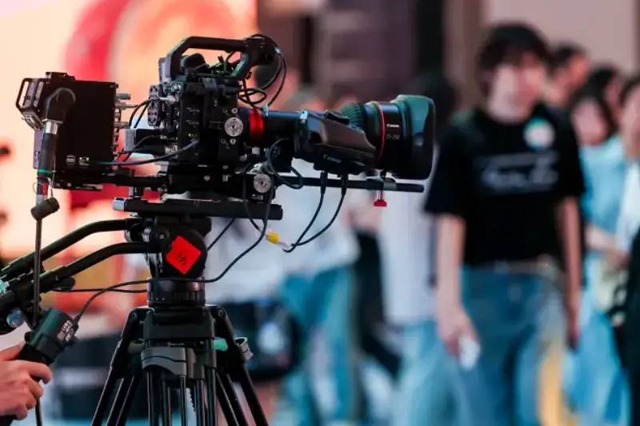
The Canon EOS C400 with the CN10×25 servo cinema lens helps the broadcast balance image expression and operating efficiency
The mix of focal lengths gives the frame visual layers and rich information, while offering good shooting flexibility.
On the system side, the EOS C400 used its native SDI output and return input to connect cleanly to a traditional switching system. It built a complete studio control chain. This means cinema-grade image quality can now run with broadcast-level workflow and signal distribution.
To raise on-site efficiency further, the system also used the Canon RC-IP1000 remote controller. This controller works over an IP network. It manages several EOS C400 cameras from one place, and supports real-time changes to key parameters such as aperture, focus, white balance, and presets. The director can control the on-site image from the switcher without adjusting each camera one by one. This greatly helps multi-camera coordination in complex settings.
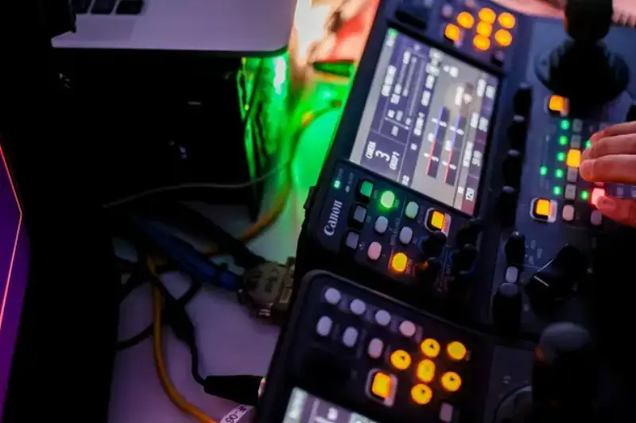
The Canon RC-IP1000 controller supports real-time remote control of several on-site EOS C400 cameras
Unlike traditional film shooting, which relies heavily on manual work, Good Live PRO improved the hardware, the control logic, and the way of working in many ways. It moved from manual direction to system direction. This joining of image quality and workflow not only raises the look of live content. It also offers a repeatable path for cinema equipment to enter broadcast live work, where coordination and stability must be high.
Canon's Unique Color Science: Handling Complex Ambient Light in Live Broadcast
The lighting at the launch was complex. Large screens, cool lights, and spotlights changed often. The color temperature ranged widely, and local contrast was strong. This set a high challenge for the stability and color accuracy of the live image.
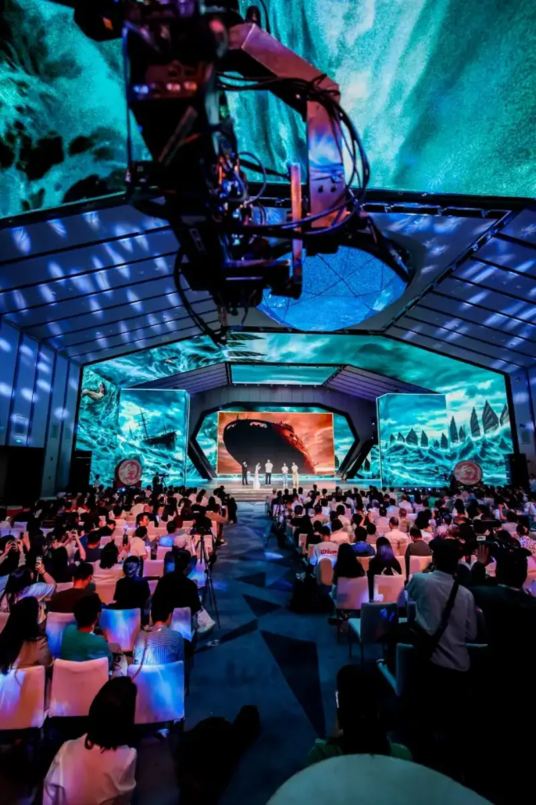
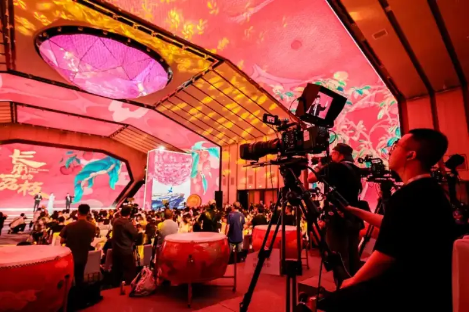
The complex launch site: a wide color-temperature range and strong local contrast
Thanks to the 6K full-frame CMOS sensor in the EOS C400 and the widely praised Canon color science, the whole broadcast kept a natural, unified look under changing light:
● Accurate skin tones, without overexposure or color cast;
● Clear detail in clothing and accessories, with rich layers in light and dark areas;
● Full background color, smooth transitions as the light changes, and a frame that is both bright and clear, with rich light layers and texture.
Canon Cinema Image Quality: From Technical Performance to Visual Expression
The shallow depth of field of the EOS C400 also played an important role in the broadcast. With a full-frame sensor and professional servo cinema lenses, the frame clearly separates the subject from the background. This strengthens focus on the main subject and builds mood, and gives the camera language more direction and emotional force.
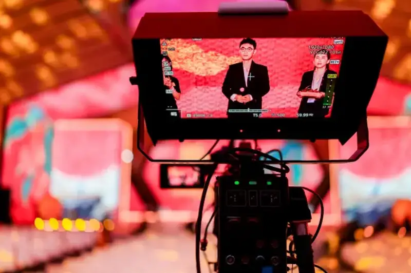
The EOS C400 captures a close-up. Shallow depth of field stresses the subject, softens the background, and strengthens visual focus and mood.
It is worth noting that this look, which is both cinematic and readable, is not only about beauty in a live broadcast. It also helps guide the viewer's eye to the speaker, the key moments, and the main content. The information is therefore clearer, and the visual delivery is more immersive.
For the Movie Channel, this was not only a technical camera test. It was a live practice around the power of the image. Through the imaging and camera language of the whole Good Live PRO solution, the channel moved beyond the record-first look of traditional live broadcasting. It built practical ground and experience to improve the look of more future program formats.
The Advantage of Canon's Native Ecosystem: A Two-Way Evolution of Focus Logic and Working Habits
On a live set, focus is usually the part most likely to fail. Especially at a launch like this, where people move often on stage and lights change fast. When a speaker walks from a dark area into bright light, or is lit from behind by a spotlight, a traditional system easily loses focus the moment they move. The focus puller stays tense the whole time, and even an experienced operator cannot relax.
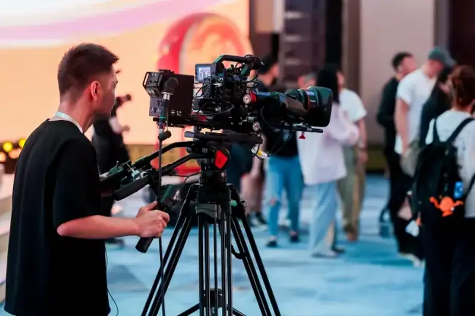
Crew operate the EOS C400 on site.
In this broadcast, the Canon servo cinema lenses paired with the EOS C400 showed very strong focus stability. Through the native ecosystem where lens and body work as one, focus detection and tracking no longer rely on external modules or third-party protocols. The system responds faster, and the lens and body work together more precisely. Even when a person moves fast or the light ratio changes sharply, autofocus still locks the subject. There was almost no focus loss during the whole shoot.
Seamless Integration into Broadcast Systems: An Unusual Combo That Delivers 1+1>2
Besides the strong single-camera image and autofocus, the whole system also fits the habits of traditional broadcast teams. The Canon RC-IP1000 manages several EOS C400 cameras from one place. Through a familiar interface, the director can remotely adjust the aperture, choose focus, match color, and call up presets, without learning a new operating system. For the director, this is an on-your-hands experience. It keeps the image quality of a cinema camera and also keeps broadcast-level control efficiency.
For the on-site camera operators, the fit is also clear. The EOS C400 supports traditional manual control. Focus feedback feels natural and the travel is precise, keeping the control feel that broadcast systems are known for. When needed, it can also lock and track with autofocus, which lowers the operator's load. The overall experience does not feel jarring or split. Operators do not have to relearn the camera language, and frontline camera staff can join the rhythm of the cinema system quickly and smoothly.
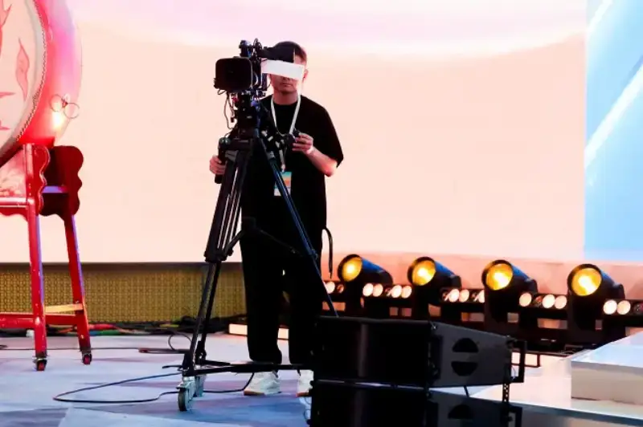
The camera operator adjusts focus and picture settings. The controls feel smooth and are quick to learn.
This is not only compatibility at the device level. It is a system-level joining. The shooting logic and the direction logic, which once belonged to two separate production systems, now work together smoothly in one broadcast. The team is more relaxed and more reliable, from the look of the image to the pace of work.
Through its native ecosystem, Good Live PRO closes the response loop between lens and body, and between control and image. For a content platform like the Movie Channel, which demands both image quality and workflow, it offers a solution that is more stable, faster, and more tuned to the team.
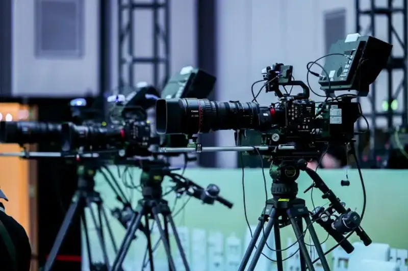
The Good Live PRO cine-camera studio live broadcast solution at the launch
From One Field Test to a Method: The Innovative Path of Cinema-Grade Live Broadcasting
This launch was not only a content event to show new films. It was more like a technical experiment in upgrading live broadcasting.
By joining the digital cinema camera system with the traditional switching workflow, Good Live PRO brings image quality and efficiency, which were hard to combine, onto one console. What should be clear is clear, what should look good looks good, the cuts happen fast, and the controlled images stay steady.
More importantly, this is not a one-time test. It is a solution that can be copied and spread. From content quality to on-site control, from image style to workflow management, this system can later be used in settings that demand higher visual quality and system stability. Examples include award shows, film festivals, red carpets, New Year's Eve events, and even brand shows and high-level launches.
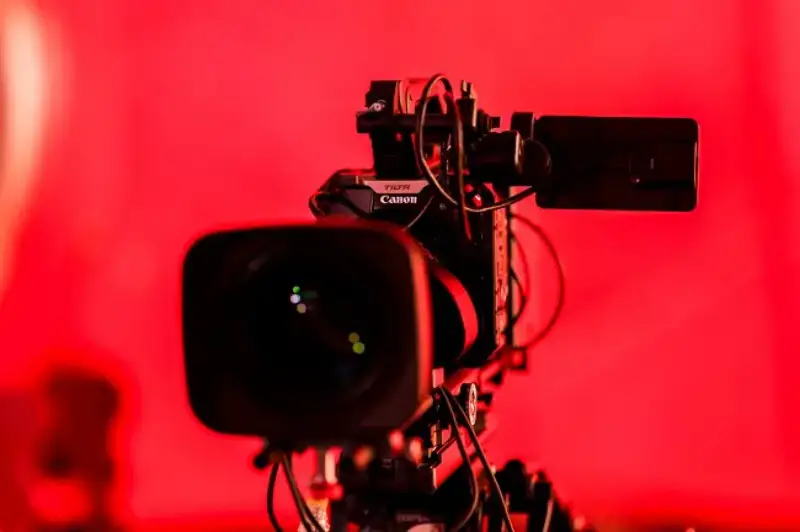
The Good Live PRO cine-camera studio live broadcast solution at the launch
In the past, we always thought of live broadcasting as recording the site as steadily as possible. But the answer that Canon and the Movie Channel delivered together shows that live broadcasting can also be a form of creation. It not only passes on information. It can also pass on mood, emotion, and even a visual style.
From clear recording to an artistic mood in the frame, the Good Live PRO cine-camera studio live broadcast solution brings a more immersive and more moving live image. It lets the aesthetics of cinema cameras enter the main flow of broadcast live systems, and gives content teams a more professional, more controllable, and more flexible tool. It does not replace the traditional way. For people who truly value content expression, it opens a higher-level way to work.